Toán vector
Giới thiệu
Bài hướng dẫn này là phần giới thiệu ngắn gọn và thực tế về đại số tuyến tính khi áp dụng vào phát triển game. Đại số tuyến tính nghiên cứu về vector và cách sử dụng chúng. Vector có rất nhiều ứng dụng trong cả phát triển 2D lẫn 3D, và Godot sử dụng chúng rộng rãi. Hiểu rõ toán vector là điều thiết yếu để trở thành một nhà phát triển game giỏi.
Ghi chú
Bài hướng dẫn này không phải là giáo trình chính thức về đại số tuyến tính. Chúng ta sẽ chỉ xem xét cách nó được áp dụng vào phát triển game. Để có cái nhìn rộng hơn về phần toán học, hãy xem https://www.khanacademy.org/math/linear-algebra
Hệ tọa độ (2D)
Trong không gian 2D, tọa độ được xác định bằng một trục ngang (x) và một trục dọc (y). Một vị trí cụ thể trong không gian 2D được viết dưới dạng một cặp giá trị, chẳng hạn (4, 3).
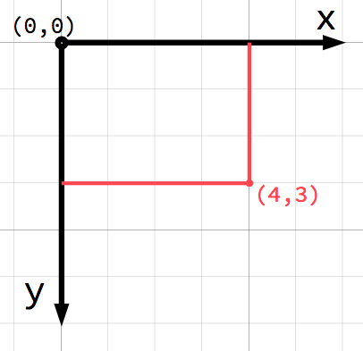
Ghi chú
Nếu bạn mới làm quen với đồ họa máy tính, có thể bạn sẽ thấy lạ khi chiều dương của trục y hướng xuống dưới thay vì lên trên như bạn có lẽ đã học ở lớp toán. Tuy nhiên, đây là quy ước phổ biến trong hầu hết các ứng dụng đồ họa máy tính.
Theo cách này, mọi vị trí trên mặt phẳng 2D đều có thể được xác định bằng một cặp số. Tuy nhiên, ta cũng có thể coi vị trí (4, 3) là một độ dời (offset) tính từ điểm (0, 0), tức gốc tọa độ. Hãy vẽ một mũi tên từ gốc tọa độ đến điểm đó:
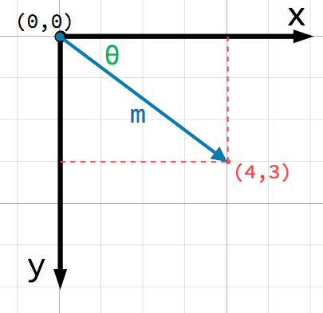
Đây là một vector. Một vector chứa rất nhiều thông tin hữu ích. Ngoài việc cho ta biết điểm nằm ở (4, 3), ta cũng có thể coi nó là một góc θ (theta) và một độ dài (hay độ lớn) m. Trong trường hợp này, mũi tên là một vector vị trí - nó biểu thị một vị trí trong không gian, tương đối so với gốc tọa độ.
Một điểm rất quan trọng cần lưu ý về vector là chúng chỉ biểu diễn hướng và độ lớn tương đối. Vector không có khái niệm vị trí. Hai vector sau đây là giống hệt nhau:
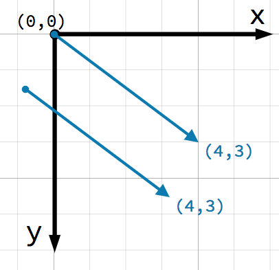
Cả hai vector đều biểu diễn một điểm cách điểm xuất phát nào đó 4 đơn vị về bên phải và 3 đơn vị về phía dưới. Bạn vẽ vector ở đâu trên mặt phẳng cũng không quan trọng, nó luôn biểu diễn một hướng và độ lớn tương đối.
Các phép toán vector
Bạn có thể dùng một trong hai cách (tọa độ x và y hoặc góc và độ lớn) để biểu diễn một vector, nhưng để tiện lợi, lập trình viên thường dùng ký hiệu tọa độ. Ví dụ, trong Godot, gốc tọa độ là góc trên bên trái của màn hình, vì vậy để đặt một node 2D tên Node2D cách 400 pixel về bên phải và 300 pixel xuống dưới, hãy dùng đoạn code sau:
$Node2D.position = Vector2(400, 300)
var node2D = GetNode<Node2D>("Node2D");
node2D.Position = new Vector2(400, 300);
Godot hỗ trợ cả Vector2 và Vector3 lần lượt cho 2D và 3D. Các quy tắc toán học được bàn trong bài viết này áp dụng cho cả hai kiểu, và bất cứ khi nào chúng tôi liên kết đến các phương thức của Vector2 trong tài liệu tham khảo lớp, bạn cũng có thể xem các phương thức tương ứng của Vector3.
Truy cập thành phần
Các thành phần riêng lẻ của vector có thể được truy cập trực tiếp theo tên.
# Create a vector with coordinates (2, 5).
var a = Vector2(2, 5)
# Create a vector and assign x and y manually.
var b = Vector2()
b.x = 3
b.y = 1
// Create a vector with coordinates (2, 5).
var a = new Vector2(2, 5);
// Create a vector and assign x and y manually.
var b = new Vector2();
b.X = 3;
b.Y = 1;
Cộng vector
Khi cộng hoặc trừ hai vector, các thành phần tương ứng được cộng với nhau:
var c = a + b # (2, 5) + (3, 1) = (5, 6)
var c = a + b; // (2, 5) + (3, 1) = (5, 6)
Ta cũng có thể thấy điều này một cách trực quan bằng cách đặt vector thứ hai vào điểm cuối của vector thứ nhất:
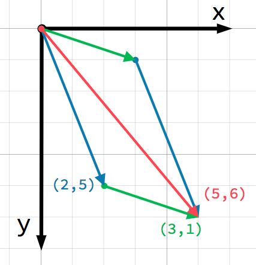
Lưu ý rằng a + b cho cùng kết quả với b + a.
Nhân với số vô hướng
Ghi chú
Vector biểu diễn cả hướng lẫn độ lớn. Một giá trị chỉ biểu diễn độ lớn được gọi là số vô hướng (scalar). Trong Godot, số vô hướng dùng kiểu class_float.
Một vector có thể được nhân với một số vô hướng:
var c = a * 2 # (2, 5) * 2 = (4, 10)
var d = b / 3 # (3, 6) / 3 = (1, 2)
var e = d * -2 # (1, 2) * -2 = (-2, -4)
var c = a * 2; // (2, 5) * 2 = (4, 10)
var d = b / 3; // (3, 6) / 3 = (1, 2)
var e = d * -2; // (1, 2) * -2 = (-2, -4)
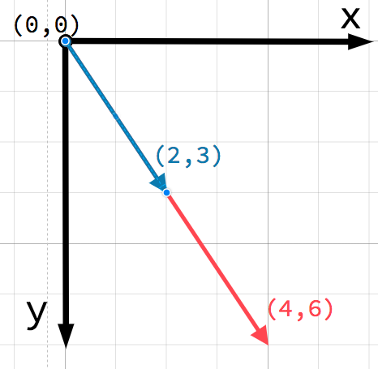
Ghi chú
Nhân vector với một số vô hướng dương không làm thay đổi hướng của nó, chỉ thay đổi độ lớn. Nhân với một số vô hướng âm sẽ cho ra vector có hướng ngược lại. Đây là cách bạn co giãn (scale) một vector.
Ứng dụng thực tế
Hãy xem hai cách dùng phổ biến của phép cộng và trừ vector.
Chuyển động
Một vector có thể biểu diễn bất kỳ đại lượng nào có độ lớn và hướng. Các ví dụ điển hình là: vị trí, vận tốc, gia tốc và lực. Trong hình này, con tàu vũ trụ ở bước 1 có vector vị trí (1, 3) và vector vận tốc (2, 1). Vector vận tốc biểu thị quãng đường con tàu di chuyển sau mỗi bước. Ta có thể tìm vị trí ở bước 2 bằng cách cộng vận tốc vào vị trí hiện tại.
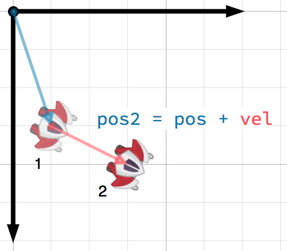
Mẹo
Vận tốc đo sự thay đổi vị trí trên mỗi đơn vị thời gian. Vị trí mới được tìm bằng cách cộng vận tốc nhân với thời gian đã trôi qua (ở đây giả định là một đơn vị, ví dụ 1 giây) vào vị trí trước đó.
Trong một game 2D điển hình, bạn sẽ có vận tốc tính bằng pixel mỗi giây, rồi nhân nó với tham số delta (thời gian đã trôi qua kể từ frame trước) từ các callback _process() hoặc _physics_process().
Hướng về phía mục tiêu
Trong tình huống này, bạn có một chiếc xe tăng muốn xoay tháp pháo về phía một con robot. Lấy vị trí của robot trừ đi vị trí của xe tăng sẽ cho ra vector hướng từ xe tăng đến robot.
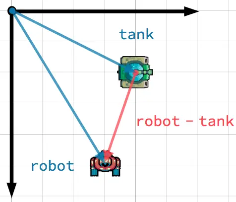
Mẹo
Để tìm vector hướng từ A đến B, hãy dùng B - A.
Vector đơn vị
Một vector có độ lớn bằng 1 được gọi là vector đơn vị. Đôi khi chúng còn được gọi là vector chỉ hướng hoặc pháp tuyến (normal). Vector đơn vị rất hữu ích khi bạn cần theo dõi một hướng.
Chuẩn hóa
Chuẩn hóa (normalize) một vector nghĩa là đưa độ dài của nó về 1 trong khi vẫn giữ nguyên hướng. Việc này được thực hiện bằng cách chia từng thành phần của vector cho độ lớn của nó. Vì đây là phép toán rất phổ biến, Godot cung cấp sẵn phương thức normalized() cho việc này:
a = a.normalized()
a = a.Normalized();
Cảnh báo
Vì chuẩn hóa đòi hỏi phải chia cho độ dài của vector, bạn không thể chuẩn hóa một vector có độ dài 0. Làm vậy thông thường sẽ gây ra lỗi. Tuy nhiên trong GDScript, việc gọi phương thức normalized() trên một vector có độ dài 0 sẽ giữ nguyên giá trị và giúp bạn tránh lỗi.
Phản xạ
Một cách dùng phổ biến của vector đơn vị là biểu thị pháp tuyến. Vector pháp tuyến là các vector đơn vị vuông góc với một bề mặt, xác định hướng của bề mặt đó. Chúng thường được dùng cho chiếu sáng, va chạm và các phép toán khác liên quan đến bề mặt.
Ví dụ, hãy tưởng tượng ta có một quả bóng đang chuyển động và muốn nó nảy ra khỏi tường hoặc vật thể khác:
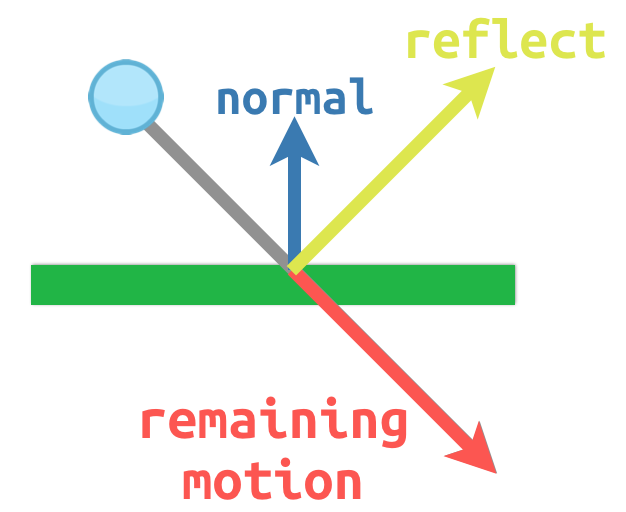
Pháp tuyến bề mặt có giá trị (0, -1) vì đây là một bề mặt nằm ngang. Khi quả bóng va chạm, ta lấy phần chuyển động còn lại của nó (lượng còn dư khi chạm vào bề mặt) và phản xạ nó bằng pháp tuyến. Trong Godot, có phương thức bounce() để xử lý việc này. Đây là ví dụ code cho sơ đồ trên, sử dụng CharacterBody2D:
var collision: KinematicCollision2D = move_and_collide(velocity * delta)
if collision:
var reflect = collision.get_remainder().bounce(collision.get_normal())
velocity = velocity.bounce(collision.get_normal())
move_and_collide(reflect)
KinematicCollision2D collision = MoveAndCollide(_velocity * (float)delta);
if (collision != null)
{
var reflect = collision.GetRemainder().Bounce(collision.GetNormal());
_velocity = _velocity.Bounce(collision.GetNormal());
MoveAndCollide(reflect);
}
Tích vô hướng
Tích vô hướng (dot product) là một trong những khái niệm quan trọng nhất của toán vector, nhưng thường bị hiểu sai. Tích vô hướng là một phép toán trên hai vector và trả về một số vô hướng. Khác với vector chứa cả độ lớn lẫn hướng, một giá trị vô hướng chỉ có độ lớn.
Công thức tính tích vô hướng có hai dạng phổ biến:
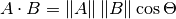
và
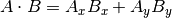
Ký hiệu toán học ||A|| biểu thị độ lớn của vector A, và Ax nghĩa là thành phần x của vector A.
Tuy nhiên, trong hầu hết trường hợp, cách dễ nhất là dùng phương thức có sẵn dot(). Lưu ý rằng thứ tự của hai vector không quan trọng:
var c = a.dot(b)
var d = b.dot(a) # These are equivalent.
float c = a.Dot(b);
float d = b.Dot(a); // These are equivalent.
Tích vô hướng hữu ích nhất khi dùng với vector đơn vị, khiến công thức thứ nhất rút gọn chỉ còn cos(θ). Điều này có nghĩa là ta có thể dùng tích vô hướng để biết được điều gì đó về góc giữa hai vector:
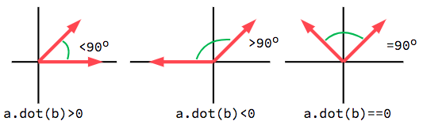
Khi dùng vector đơn vị, kết quả sẽ luôn nằm trong khoảng từ -1 (180°) đến 1 (0°).
Hướng nhìn
Ta có thể dùng điều này để phát hiện một vật thể có đang hướng về phía một vật thể khác hay không. Trong sơ đồ dưới đây, người chơi P đang cố tránh các zombie A và B. Giả sử tầm nhìn của zombie là 180°, liệu chúng có thấy người chơi không?
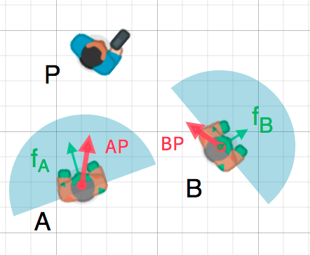
Các mũi tên màu xanh lá fA và fB là các vector đơn vị biểu thị hướng nhìn của zombie, còn hình bán nguyệt màu xanh dương biểu thị tầm nhìn của nó. Với zombie A, ta tìm vector chỉ hướng AP trỏ đến người chơi bằng P - A rồi chuẩn hóa nó; tuy nhiên, Godot có sẵn một phương thức hỗ trợ việc này là direction_to(). Nếu góc giữa vector này và vector hướng nhìn nhỏ hơn 90°, thì zombie có thể nhìn thấy người chơi.
Viết bằng code sẽ trông như sau:
var AP = A.direction_to(P)
if AP.dot(fA) > 0:
print("A sees P!")
var AP = A.DirectionTo(P);
if (AP.Dot(fA) > 0)
{
GD.Print("A sees P!");
}
Tích có hướng
Giống như tích vô hướng, tích có hướng (cross product) là một phép toán trên hai vector. Tuy nhiên, kết quả của tích có hướng là một vector có hướng vuông góc với cả hai. Độ lớn của nó phụ thuộc vào góc tương đối giữa chúng. Nếu hai vector song song, kết quả tích có hướng của chúng sẽ là vector không.
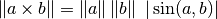
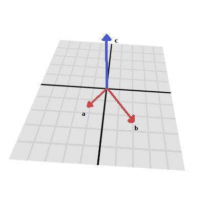
Tích có hướng được tính như sau:
var c = Vector3()
c.x = (a.y * b.z) - (a.z * b.y)
c.y = (a.z * b.x) - (a.x * b.z)
c.z = (a.x * b.y) - (a.y * b.x)
var c = new Vector3();
c.X = (a.Y * b.Z) - (a.Z * b.Y);
c.Y = (a.Z * b.X) - (a.X * b.Z);
c.Z = (a.X * b.Y) - (a.Y * b.X);
Với Godot, bạn có thể dùng phương thức có sẵn Vector3.cross():
var c = a.cross(b)
var c = a.Cross(b);
Về mặt toán học, tích có hướng không được định nghĩa trong 2D. Phương thức Vector2.cross() là một dạng tương tự thường dùng của tích có hướng 3D cho các vector 2D.
Ghi chú
Với tích có hướng, thứ tự là quan trọng. a.cross(b) không cho cùng kết quả với b.cross(a). Các vector kết quả hướng theo chiều ngược nhau.
Tính pháp tuyến
Một cách dùng phổ biến của tích có hướng là tìm pháp tuyến bề mặt của một mặt phẳng hoặc bề mặt trong không gian 3D. Nếu có tam giác ABC, ta có thể dùng phép trừ vector để tìm hai cạnh AB và AC. Dùng tích có hướng, AB × AC cho ra một vector vuông góc với cả hai: đó là pháp tuyến bề mặt.
Đây là một hàm tính pháp tuyến của tam giác:
func get_triangle_normal(a, b, c):
# Find the surface normal given 3 vertices.
var side1 = b - a
var side2 = c - a
var normal = side1.cross(side2)
return normal
Vector3 GetTriangleNormal(Vector3 a, Vector3 b, Vector3 c)
{
// Find the surface normal given 3 vertices.
var side1 = b - a;
var side2 = c - a;
var normal = side1.Cross(side2);
return normal;
}
Hướng về một mục tiêu
Trong phần tích vô hướng ở trên, ta đã thấy cách dùng nó để tìm góc giữa hai vector. Tuy nhiên, trong 3D, chừng đó thông tin là chưa đủ. Ta còn cần biết phải xoay quanh trục nào. Ta có thể tìm trục đó bằng cách tính tích có hướng giữa hướng nhìn hiện tại và hướng đến mục tiêu. Vector vuông góc thu được chính là trục quay.
Thông tin thêm
Để biết thêm về cách dùng toán vector trong Godot, hãy xem các bài viết sau: